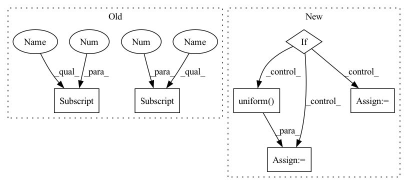

Pattern ID :34369
Before Change
area = size[0] * size[1]
crop_area = tf.random.uniform((), *scale) * area
ww_fraction_min = tf.maximum(crop_area / size[0] , tf.sqrt(crop_area / ratio[1]))
ww_fraction_max = tf.minimum(tf.cast(size[1], "float32"), tf.sqrt(crop_area / ratio[0]))
ww_fraction = tf.random.uniform((), ww_fraction_min, ww_fraction_max)
// hh_crop, ww_crop = tf.cast(tf.math.ceil(crop_area / ww_fraction), "int32"), tf.cast(tf.math.ceil(ww_fraction), "int32")
hh_crop, ww_crop = tf.cast(tf.math.floor(crop_area / ww_fraction), "int32"), tf.cast(tf.math.floor(ww_fraction), "int32")
// return hh_crop, ww_crop, crop_area, ww_fraction_min, ww_fraction_max, ww_fraction
return tf.minimum(hh_crop, size[0] - 1), tf.minimum(ww_crop, size[1] - 1)
class RandomProcessImage:After Change
crop_area = tf.random.uniform((), *scale) * area
hh_fraction_min = tf.maximum(crop_area / size[1], tf.sqrt(crop_area / ratio[1]))
hh_fraction_max = tf.minimum(tf.cast(size[0], "float32"), tf.sqrt(crop_area / ratio[0]))
if log_distribute: // More likely to select a smaller value
log_min, log_max = tf.math.log(hh_fraction_min), tf.math.log(hh_fraction_max)
hh_fraction = tf.random.uniform((), log_min, log_max)
hh_fraction = tf.math.exp(hh_fraction)
else:
hh_fraction = tf.random.uniform( (), hh_fraction_min, hh_fraction_max)
// hh_crop, ww_crop = tf.cast(tf.math.ceil(hh_fraction), "int32"), tf.cast(tf.math.ceil(crop_area / hh_fraction), "int32")
hh_crop, ww_crop = tf.cast(tf.math.floor(hh_fraction), "int32"), tf.cast(tf.math.floor(crop_area / hh_fraction), "int32")
// return hh_crop, ww_crop, crop_area, hh_fraction_min, hh_fraction_max, hh_fraction
return hh_crop, ww_cropIn pattern: SUPERPATTERN
Frequency: 3
Non-data size: 6
Instances Fragment ID: 98624674
Project Name: leondgarse/keras_cv_attention_models
Commit Name: 9ffd6bde8e0d116c5afde1cd3a57aab9c0aff62d
Time: 2021-10-19
Author: leondgarse@gmail.com
File Name: keras_cv_attention_models/imagenet/data.py
M Class Name: AnonimousClass
N Class Name: AnonimousClass
M Method Name: random_crop_fraction(4)
N Method Name: random_crop_fraction(3)
M Parent Class:
N Parent Class:
M File Name: keras_cv_attention_models/imagenet/data.py
N File Name: keras_cv_attention_models/imagenet/data.py
M Start Line: 25
M End Line: 32
N Start Line: 7
N End Line: 46
Before Change
// tf conv2d does not work when CUDA is installed, but array is on CPU
return
x = np.random.uniform(size=array_shape).astype(dtype[0] )
x = np.expand_dims(x, (-1))
filters = np.random.uniform(size=(filter_shape, filter_shape, 1, 1)).astype(
dtype[1]
)
helpers.test_function(
dtype,
as_variable,After Change
// tf conv2d does not work when CUDA is installed, but array is on CPU
return
if fw == "torch" and "float16" in dtype:
// not implemented for Half
return
if f_w + (f_w - 1) * (dilations - 1) > x_w:
// kernel size can"t be greater than input
x_w = f_w + (f_w - 1) * (dilations - 1)
if f_h + (f_h - 1) * (dilations - 1) > x_h:
// kernel size can"t be greater than input
x_h = f_h + (f_h - 1) * (dilations - 1)
if data_format == "NHWC":
x = np.random.uniform(size=[batch_size, x_h, x_w, d_in]).astype(dtype)
else:
x = np.random.uniform(size=[batch_size, d_in, x_h, x_w]).astype(dtype)
filters = np.random.uniform(size=[f_h, f_w, d_in, d_out]) .astype(
dtype
)
helpers.test_function( Fragment ID: 98624675
Project Name: ivy-dl/ivy
Commit Name: c4c41e09f65d4f2a8aff9292086a587f0b7a4cfc
Time: 2022-07-09
Author: sherrytst30@gmail.com
File Name: ivy_tests/test_ivy/test_functional/test_nn/test_layers.py
M Class Name: AnonimousClass
N Class Name: AnonimousClass
M Method Name: test_conv2d(19)
N Method Name: test_conv2d(14)
M Parent Class:
N Parent Class:
M File Name: ivy_tests/test_ivy/test_functional/test_nn/test_layers.py
N File Name: ivy_tests/test_ivy/test_functional/test_nn/test_layers.py
M Start Line: 323
M End Line: 327
N Start Line: 311
N End Line: 351
Before Change
area = size[0] * size[1]
crop_area = tf.random.uniform((), *scale) * area
ww_fraction_min = tf.maximum(crop_area / size[0] , tf.sqrt(crop_area / ratio[1]))
ww_fraction_max = tf.minimum(tf.cast(size[1], "float32"), tf.sqrt(crop_area / ratio[0]))
ww_fraction = tf.random.uniform((), ww_fraction_min, ww_fraction_max)
// hh_crop, ww_crop = tf.cast(tf.math.ceil(crop_area / ww_fraction), "int32"), tf.cast(tf.math.ceil(ww_fraction), "int32")
hh_crop, ww_crop = tf.cast(tf.math.floor(crop_area / ww_fraction), "int32"), tf.cast(tf.math.floor(ww_fraction), "int32")
// return hh_crop, ww_crop, crop_area, ww_fraction_min, ww_fraction_max, ww_fraction
return tf.minimum(hh_crop, size[0] - 1), tf.minimum(ww_crop, size[1] - 1)
class RandomProcessImage:After Change
crop_area = tf.random.uniform((), *scale) * area
hh_fraction_min = tf.maximum(crop_area / size[1], tf.sqrt(crop_area / ratio[1]))
hh_fraction_max = tf.minimum(tf.cast(size[0], "float32"), tf.sqrt(crop_area / ratio[0]))
if log_distribute: // More likely to select a smaller value
log_min, log_max = tf.math.log(hh_fraction_min), tf.math.log(hh_fraction_max)
hh_fraction = tf.random.uniform((), log_min, log_max)
hh_fraction = tf.math.exp(hh_fraction)
else:
hh_fraction = tf.random.uniform( (), hh_fraction_min, hh_fraction_max)
// hh_crop, ww_crop = tf.cast(tf.math.ceil(hh_fraction), "int32"), tf.cast(tf.math.ceil(crop_area / hh_fraction), "int32")
hh_crop, ww_crop = tf.cast(tf.math.floor(hh_fraction), "int32"), tf.cast(tf.math.floor(crop_area / hh_fraction), "int32")
// return hh_crop, ww_crop, crop_area, hh_fraction_min, hh_fraction_max, hh_fraction
return hh_crop, ww_crop Fragment ID: 98624681
Project Name: leondgarse/keras_cv_attention_models
Commit Name: 9ffd6bde8e0d116c5afde1cd3a57aab9c0aff62d
Time: 2021-10-19
Author: leondgarse@gmail.com
File Name: keras_cv_attention_models/imagenet/data.py
M Class Name: AnonimousClass
N Class Name: AnonimousClass
M Method Name: random_crop_fraction(4)
N Method Name: random_crop_fraction(3)
M Parent Class:
N Parent Class:
M File Name: keras_cv_attention_models/imagenet/data.py
N File Name: keras_cv_attention_models/imagenet/data.py
M Start Line: 25
M End Line: 32
N Start Line: 7
N End Line: 46